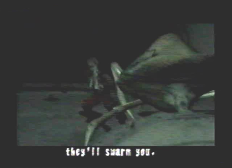
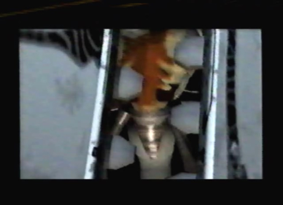
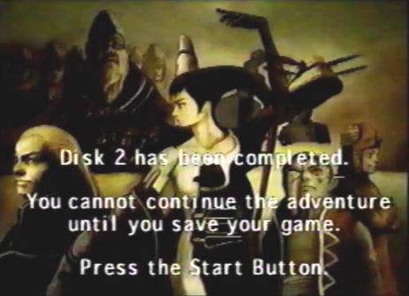

Diary Entry 17: Underground Ruins of Uru Survival of the Fittest The girl and I, had fallen off of our dragons and into a portal, leading down into the underground ruins of Uru. I awoke to find I was trapped, had no dragon and no way of getting back out. In my depressing moment of loneliness, I was treated to the horrifying sound of ravaging monsters, drawing closer to feast on my helpless body. I wasn't going to let that happen! As they drew near, I aimed my gun, ready to fire upon the terrible creatures. It was then, that I heard the girl speak out. She told me not to shoot, or I would alert them that food was near. If I were to pull the trigger, they would swarm me, she said. The creatures were blind and wouldn't be able to find me, as long as I stayed quiet. The monsters scurried past me. The girls advice had saved my life. She then told me to lower my weapon. I lit a match in an attempt to find her location. Her bright face emerged from the darkness. I told her to come out slowly and I would think about lowering my gun. She told me she would have, if her legs weren't pinned under a hovering device. I said I would help her, if she would show me the way to the Tower. It was useless, the entrance was already sealed, she said. She then made it a point to tell me that the monsters down here were more deadlier than anything I had previously faced. I thought it best for us to work together. It was going to be the survival of the fittest, in this monster infested place. I put my gun away, pressed a switch under the hovering device and the girl was freed. I told her when we get out of here, I wanted some answers. She made sure that we hurry along, because more monsters were on the way. I synchronized my High Vulcan gun part with the hovering device and the girl and I rode off into the ruin depths of B1F. I wondered what we would do now? The girl said at the dome below us, there was an elevator that would be able to bring us directly to the surface. If we could get there, we would be able to leave this place, that is, if we could get there without being eaten! On our left, we found a gate. A message told us that Gate # 1 was closed. We needed to find a way to open it. As we flew north from Gate # 1, we found a switch. We proceeded to activate this switch, in the hope that it would unlock Gate # 1. Luckily, it did just that. We moved past Gate # 1 to the next area. To the left we found another gate. Another message said Gate # 2 was closed. I knew we needed to find another gate switch. We headed south. Upon heading in this direction, we flew over the carcasses of dead monsters. It was then that we were immediately ambushed by more blood thirsty monsters, that wanted us as their next meal! They both jumped at each other, fighting for the pleasure of consuming our flesh. We quickly destroyed them with the hover devices lock-on lasers. Moving further south, lead us to a southern chamber containing another switch. It unlocked Gate # 2. We headed past the gate and rode an elevator down to B2F East. A northern path brought us to a water tank. Moving a ways north from that water tank, brought us to a second water tank. Each tank was devoid of water, making it impossible to cross over to the other side, unless we could find a way to fill them with water somehow. We continued north, moving down a descending slope. The girl told me that the floater, or so she called it, was loosing power and wouldn't be able to go back up any steep slopes. I asked her why she didn't tell me that before? It was too late now, we had already gone down the slope! I told her I would ask her before doing anything, even wiping my nose! She agreed and said to continue going strait, she wanted to see something. I wondered what? We crossed over a third water tank, this one was filled, allowing us to move along to the other side. We found ourselves in a room full of strange hanging creatures. I asked her what this place was? The creatures looked very similar to my dragon. "Long ago, this place was a genetics lab, where prototype dragons were created," she said. "The project was terminated before they were finished." She also said that humans created them and my dragon as well. I was completely surprised! I couldn't believe that humans had created such a wondrous and powerful creature, such as my dragon! Before leaving, we found another switch inside the room. We activated it, wondering what it was going to do. The girl heard water flowing. She said a waterway gate must have opened somewhere. Upon leaving the room, we saw that the water from the third tank we had crossed, was now drained. We descended down into the tank. It was a long drop. The tanks were connected vertically to the floors above. I asked the girl if she was hurt? She seemed to not understand what that word meant. Anyway, we found a switch right next to us. We activated it, assuming it would fill water tanks # 1 and # 2. From B3F East we rode an eastern elevator back up to B2F East. Before crossing over water tank # 1 to the underground dome, we first crossed over water tank # 2 and found an item box there. It contained a Hunting Scythe technique that the dragon could learn. We proceeded to cross over water tank # 1 and entered the dome. We fell downward to the surrounding green water below. We weren't able to go back up and the door nearby asked us to enter the Dome Gate Key, so we left through the western door to B3F West, in an attempt to find the key. The girl said once we found the key, we would be able to enter an elevator that would take us to the surface. To our right, we found the third gate. A message said Gate # 3 was closed. We found the corresponding gate switch in a southern chamber, but not before a monster jumped out from a protruding wall and scared the hell out of us! After defeating the monster, we activated the switch in the southern chamber and moved past Gate # 3. We then took the elevator we found at the end of the path, to B4F. We had traveled a long way. I wondered how far down we were? The girl answered by saying we were four floors down. From this point on everything was going to slope downhill, she said. The Dome Gate Key would probably be somewhere in the middle, at the end of one of the branching passages. I hoped we weren't going to get lost! Eventually, after taking multiple paths, we finally found the Dome Gate Key. I hoped it would open the gate that would take us to the surface, because I wanted to get out of this monster infested place! We returned to the dome, only to have to face a strange creature atop a nest, high above us. After destroying its nest, the creature made its escape. We let it go, for we had greater things to worry about, escaping this god forsaken place! I wanted to know why there were so many monsters so deep inside these ruins? The girl explained to me that the creatures had mutated since they were born here. She also said the fleet took serious damage coming through here too. Craymen's Fleet had been through here? I should have known he would try coming here. The monsters now knew we had destroyed their nest, so we left without a moments notice. We opened the dome gate, barely making it to the elevator before being eaten alive by a gigantic, furious monster. As we rode the elevator up to the surface, we had a long conversation. I told the girl that I didn't even know her name. "Azel" she said. Her name was Azel! I told her it was a strange name. Azel told me it was inscribed on the bed where she awoke, after having slept for thousands of years. She also told me she may look human, but internally, she was closer to the creatures we'd been fighting. I asked her why she attacked me? "You stand in his way," she said. I asked her why she protects Craymen? She told me he is trying to save the world, to return it to its former state. Yeah, that's a load of Coolia's Dung! She wouldn't allow anyone who stands in his way to come near him, she said. I told her he was a lying murderer! "To gain control of the Tower, Craymen killed my Captain and my friends", I screamed. I told Azel, he was only lying to her. "Even though he may be lying I choose to defend him, because he awoke me from my eternal sleep," she said. Telling her about how we were betrayed and the killing of my friends at the excavation site where she was found, caused her to say she was sorry. It was kind of peculiar. She said she was supposed to apologize at a time like this, or so she was taught. She then asked me how I could control my dragon so well? before I could give her a conclusive answer, the elevator was suddenly torn open by another monster and we fell to our immediate deaths! Just when I thought our lives would be over, my dragon came to the rescue, putting us in protective force fields! We rode straight to the surface, with the monster trailing just mere inches behind us! Upon reaching the surface, we had no choice but to subdue the angry beast. It wanted revenge for destroying the nest. Also, atop its head, was that small creature that escaped when it was destroyed. We soon fought an intense battle against the thing, coming away victorious. My dragon even upgraded to a more powerful form! I told her how daring my dragon and I had been, throughout the battle. Something was wrong. "Atolm calls, I must leave," she said. Once we were on solid ground, she walked off into the distance saying, " Just stay out of his way, or else we will have to kill you." Her dragon swooped upward taking her off her feet and they flew into the sunset, without even saying good-bye. So much for the bonds of friendship! |
|
| Divine
Overview |
1. Edge and the girl move through a portal leading to the Underground Ruins of Uru. |
 2. Edge wakes up to find himself surrounded by monsters. The girl tells Edge not to shoot, or they will swarm him. The creatures pass by and the girls advice saves Edge's life. The girl tells Edge to lower his gun. |
3. Edge lights a match in an attempt to find the girls location. Once Edge finds the girl, he turns on a floater that was pinning her legs and they agree to work together to survive the monster infested ruins. |
4. They both ride the floater away from the oncoming swarm of monsters, into the depths of the facility. |
5. When you first start out on B1F, make sure to equip the High Vulcan gun part. There will be a save device in front of you. Behind it, will be a door asking you to enter the Dome Gate Key. Your main objective is to descend to the floors below you, in an attempt to find an elevator that can take you to the surface. |
6. Left of the save device, you will find Gate # 1. In order to unlock it, you'll have to find the Gate # 1 switch. |
7. The Gate # 1 switch can be found directly right of the save device (north, if you are looking at the map), in a small chamber. Activate it to unlock Gate # 1. Proceed past Gate # 1 to the next area. |
8. Once past Gate # 1 move to the left, (right, if you're looking at the map). You will arrive at Gate # 2. Of course it is also locked and will have to be unlocked, by finding and activating the Gate # 2 switch. |
9. Moving south, will eventually bring you to a split in the path. Beware, passing over the dead carcasses of monsters, will draw other monsters attention. |
10. They want you as their next meal and will fight over you for the pleasure of consuming your flesh. Destroy them before they get a chance to. |
11. The Gate # 2 switch can be found in a southern chamber. Activate it to unlock Gate # 2. Proceed past Gate # 2. |
12. Once past Gate # 2, you'll find an elevator. Ride it down to B2F East. |
13. Moving north (west, if you are looking at the map) will bring you to a large water tank. This is Water Tank # 1. Drop down it! |
14. You will descend to B3F East. The tank is connected vertically to the floor above. Explore this floor and ride the eastern elevator back up to B2F East. |
15. Once back at B2F East move north, not too far from the first water tank, you will find a second water tank on a path that branches to the west. This is Water Tank # 2. Drop down it! |
16. You will descend to a different part of B3F East. Explore the area and take the eastern elevator back up to B2F East. |
17. Once back at B2F East, go all the way to the north, until you start to move down a descending slope. The girl will tell you the floater is losing power and won't be capable of going back up steep slopes. She then tells you to head straight, because there is something she would like to see. |
18. Cross over Tank # 3 into a room containing defective prototype dragons. Surprisingly, they were all created by humans. Does this mean the Ancients were human? |
19. Within this room, you will find the Water Tank # 3 switch. Activating it will drain the water from Water Tank # 3, just outside the room. Descend down into the tank. |
20. Descending down Water Tank # 3 will bring you to another part of B3F East, containing a switch that when activated, fills Water Tanks # 1 and # 2. After activating the switch, take the eastern elevator back up to B2F East. |
21. Before crossing over the newly filled Water Tank # 1 to the Underground Dome, cross over Water Tank # 2, to find an item container that contains the Extra Class berserk technique Hunting Scythe. |
22. Now cross over Water Tank # 1 and proceed to the Underground Dome. |
23. A message from the Dome Gate will ask you to enter the Dome Gate Key. You must acquire this key, in order to open the Dome Gate and get to the elevator behind it. Within the Underground Dome, go through the western door. |
24. You will arrive at B3F West. Save your game at the save device. |
25. To the right of the save device (north, if your looking at the map) you will find Gate # 3. Seek out the Gate # 3 switch to unlock the gate. |
26. Head south. You will be ambushed by a monster that jumps out from one of the protruding walls. Make it pay, for scaring the $**t out of you! |
27. The Gate # 3 switch can be found in a chamber all the way south. Activate it to unlock Gate # 3. Proceed past Gate # 3. |
28. Once past Gate # 3, ride the elevator you will find at the end of the path to B4F. |
29. When you emerge from the elevator, take the right path to arrive in a long chamber containing 18 item boxes. The 9 boxes to the left, can only be opened by your dragon. You will have to come back later, once you have gotten your dragon back on Disc 3. The 9 boxes to the right are up for grabs. You know you can't resist, you greedy son of a Coolia! |
30. If you manage to descend downward from B4F to B5F, you will most certainly run into a few Absorboras, that will jump down when you fly past the dead monster carcasses. They are a mixture of both plant and animal, cool! There is a trick to destroying them. Check the Hostile Enemies section and scroll down to the Absorbora, to find out. |
31. While on B5F you can take a western elevator back up to B4F. |
32. When exploring the many branching, complex paths of B4F you will eventually run into Mutant Ceiling Scavengers. You will encounter these creatures while flying under the many hanging pods. |
33. You will eventually find the Dome Gate Key at the end of one of the many branching paths. If you are having trouble finding it, refer to the map. |
34. Head back to the Underground Dome. You will have to deal with an Energ who dwells on top of a nest, hanging high above you. It secretes a slimy fluid which Absorboras sprout from, weird. |
35. After you defeat the Energ, it escapes the nest. Just leave it be, you have to get to the elevator and get out of this god forsaken place! |
36. Use the Dome Gate Key and head through the massive door to the elevator, that will bring you to the surface. |
37. You have angered a giant monster that protects the Energ, in exchange for the energy it produces. Now, it wants revenge for having destroyed its only source of energy: the nest. Edge and the girl barely make it into the elevator, before being eaten alive! |
38. On the ride up to the surface, Edge and the girl have a long conversation about past events. The girl tells Edge her name is Azel. It was inscribed on the bed she awoke in, after having slept for thousands of years. |
 39. Their conversation comes to a frightening halt, as the giant monster catches up to them, breaking apart the elevator! |
40. Edge and Azel fall to their deaths. Is this the end!? Will They survive!? |
41. Of course they survive, they're the main characters silly! Edge's dragon comes to the rescue. They all fly to the surface, as the furious monster trails but mere inches behind them. |
42. Upon reaching the surface, you will have to do battle with both the large Basilus monster and the small Energ creature, atop its head. |
43. The battle wasn't so hard, now was it? Okay, maybe a little bit, but at least your out of that monster infested facility. |
44. And look, your dragon just upgraded to Panzer Wing! |
45. After the battle, while on land, Azel stands in the distance. She warns you not to stand in Craymen's way, or she will have to kill you! So much for the bonds of friendship. |
46. She summons her dragon Atolm, to take her away. |
47. They fly off into the sunset, without even saying good-bye. |
 48. Congratulations! You've completed Disc 2 and are now ready to insert Disc 3! |